যখন কোন ভেরিএবল বা statement _ undefine বা null অবস্থায় আছে কিনা সেটা চেক করার দরকার হয় ,
তখন সেটা অতি সহজে ও সর্টে যাচাই করার কাজটা করা হয় nullish operator এর সাহায্যে ।
যেমন ternary operator if _ else এর একটা short form ছিল ।
ঠিক তেমনি শুধু মাত্র এই nullish operator টা এই ক্ষেত্রে trenary operator ব্যেবহার করতে গেলে সেটাকে আরও short করে লিখার সুবিধা দেয় ।
যেমনঃ-
ex:-If _ else রুপ
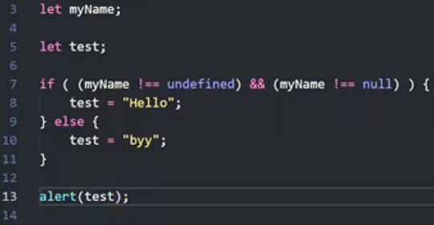
ex:-2 ,, ex:-1 এর ternary রুপ
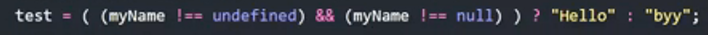
pure ternary
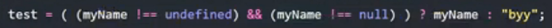
এইযে উপরের জিনিস গুল এত বড় করে লিখা হয়েছে সেগুলোকে আর ছোট করে লিখার কাজটাই করা হিয় এই nullish operator দিয়ে ।
ex:-3 ,,, ex:-2 এর ternary operator এর nullish রুপ ।
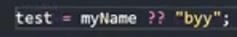
এই operator এর মুল কাজ হল ,
কোন ভেরিএবল বা statement ___ undefine বা null অবস্থায় আছে কিনা ।
যেমনঃ-
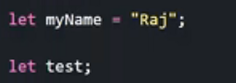
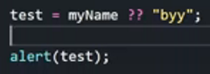
result = raj
যেহেতু এই ভেরিএবল টা undefine বা null নয় সেহেতু nullish operator এই ভ্যেরিএবলে যে ডাটা স্টোর আছে সে সেটা print করছে ।
অর্থাৎ যদি সে ভেরিএবল টাকে false পায় তবে সে nullish statement এর ভ্যেলুটা স্টোর করে ।
আন্যথায় যদি ভ্যেরিএবিল টা true হয়ে যায় তবে সে ভ্যেরিএবলে যে ডাটা স্টোর আছে সেটা nullish retrun করে ।
মোট কথা :-
এখানে প্রথমে myName ভ্যেরিএবল কে চেক করে দেখা হয়েছে যে এটা null বা undefine কিনা । তারপর যখন nullish বা null Coalescing oprator ,, retrun পেল যে true তখন সে myName এ store থাকা ভ্যেলু test এ store করেছে ।
মোট কথা 2 :-
কোন ভ্যেরিএবল set বা define করা আছে কিনা সেটা চেক করা হয় এই nullish বা null Coalecing operator এর সাহায্যে ,
আর যদি operator দেখে যে ভ্যেরিএভল টা null বা undefine অবস্থায় নেই তখনই সেই ভ্যেরিএবল টাকে সেট বোঝায় ,
set বা define থাকলে ভ্যেরিএবিলের ডাটা স্টোর হবে ।
আর সেট না থাকলে nullish operator এর ডাটা স্টোর হবে ।
ex:-1
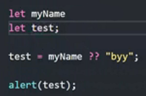
এখানে myname টা define করা নেই তাই এখানে test এ স্টোর হবে undefine আর তাই alert হবে byy ।
result = byy
ex:-2
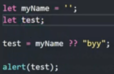
এখানে myname empty string দ্বারা define করা আছে ।
তাই এখানে test এ স্টোর হবে ' ' আর তাই alert হবে (empty)
ex:-3
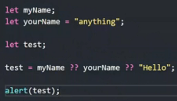
এখানে operator myname এ undefine পেয়ে YourName এ যাবে তারপর সে yourName এর ভ্যেলুটা test এ স্টোর করবে ।
এবং তারপর test alert করবে anything .
ex:-4
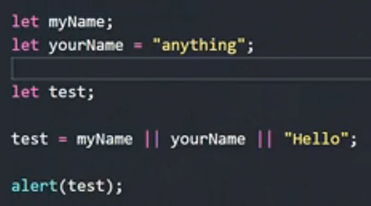
যেহেতু nullish operator টা খুব সাম্প্রতিক তৈরি হয়েছে তাই আগে developer রা OR operator ব্যেবহার করত ।
এখানেও একই কাজ হবে আর আমরা জানি oR operator সব সময় true কে খুঁজে তাই সে myname এর মধ্যে undefine ,, means ,, falseপাওয়ার পর সে yourName কে পড়ে দেখবে , এবং এটা true হওয়ায় সে এর ভ্যালু anything , retrun করে দিবে ।
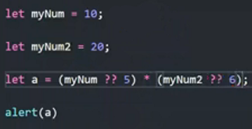
এখানে alert হবে 200
কারন এখনে যেহেতু first backet ব্যেবহার কর হয়েছে সেহেতু আগে left first bracket এর condition টা execute হবে
তারপর right first bracket এর condition টা execute হবে তারপর multiplication হবে এবং multiplication এর retrun করা ভ্যালু a এর মধ্যে স্টোর হবে ।
এবং এটাই alert হবে ।
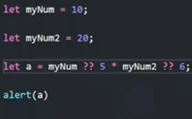
এখানে alert হবে 10 ।
কারন , যদিও এখানে multiplication এর কজটা আগে হবে কিন্তু যেহেতু js ,, left side থেকে পড়ে পড়ে আসবে সে myName এর মধ্যে 10 পেয়ে যাবে এবং nullish operator সেটা স্টোর করে দিবে আর পরবর্তী অর্থাৎ ডান দিকের ভ্যালু গুলুকে execute এবং store করবে না ।
এখন ।
or আর null Coalescing operator এর মধ্যে অনেক বড় একটা পার্থক্য আছে ।
সেটা হল ।
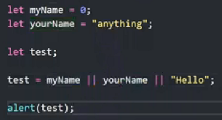
এখানে or operator ,, myname এর মধ্যে
দেখতে পাবে 0 আর or এর কাছে 0 মানে false তাই সে yourname এর ভ্যেলুকে test এ স্টোর করবে ।
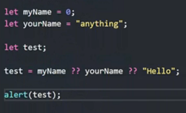
কিন্তু এখানে null coalecing operator দেখবে যে কোন একটা ভ্যেরিএবল set আছে কিনা সেটা ।
আর এখনে যেহেতু myname ০ এর দ্বারা হলেও define করা আছে তাই null coalecing operator ,, myname কে true ধরে নিবে ।
এটাকে যদি or operator এর সাহায্যে করতাম তাহলে আমার লজিক আমার মত করে কাজ করত না ।